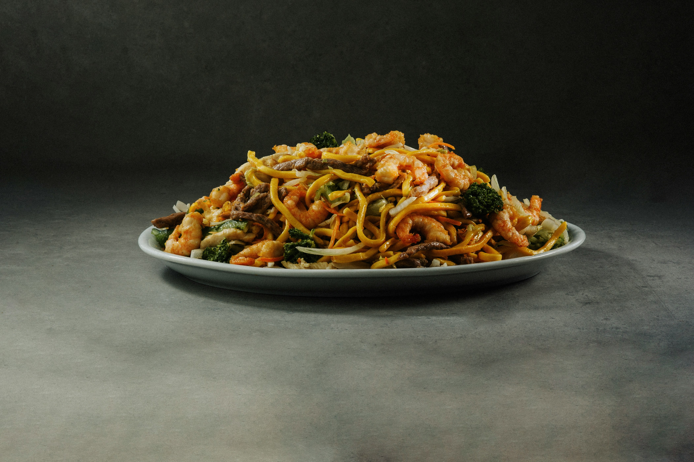

Yakisoba is a traditional dish from Japan. It consists of soba noodles, made from wheat flour, stir-fried with meat or seafood and a variety of vegetables. Everything is mixed with a thick, sweet, and savory sauce.
This iconic meal can be found all over Japan, including in izakayas (Japanese bars), diners, and even candy stores.
Home